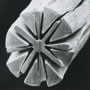
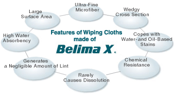
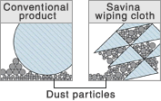
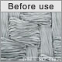
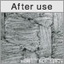
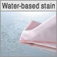
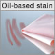
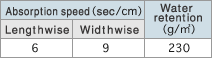
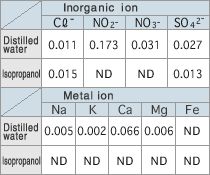
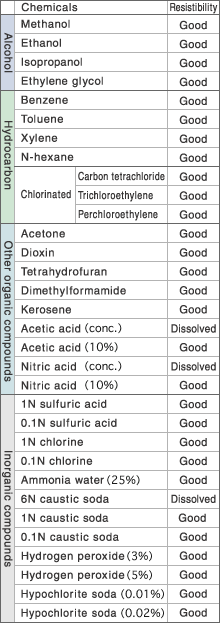

Belima X is
produced by: (1) weaving or knitting a base fabric with
polyester/nylon special conjugate (composite) yarn;
and (2) chemically treating the fabric to open and split
the yarn used. After being split, each resultant filament
is as fine as only 0.1 decitex. This remarkable fineness
allows the development of various high-performance,
fashionable materials.
Original
yarn

After
splitting

Belima X, a 0.1-decitex ultra-fine
microfiber used for wiping cloths, is soft and
flexible enough to leave no scratches on anything
that is wiped.
The wedgy cross section of Belima
X allows the fabric to snugly fit even the most
minutely uneven surface of a wiped object. It
positively entraps and prevents reattachment of
microscopic particles of dust and dirt.
Abrasion
test on an acrylic plate

A woven or knitted fabric of Belima
X ultra-fine microfiber undergoes a special finish
which makes the fabric shrink both lengthwise
and widthwise. This makes the fabric structure
extremely dense, by up to 40% of its original
size. A large surface area thus created permits
effective dust removal.
Water-affinitive nylon and oil-affinitive
polyester provide superb wiper performance against
any type of stains, whether it is water-based
or oil-based.




A wiping cloth made of Belima
X demonstrates excellent water absorbency,
thanks to hydrophilic properties of nylon
and the capillary tube effect of highly-dense
fabric structure.

Absorption
speed test method
：
Immerse
a 2 cm x 6 cm specimen in water with
only 2 cm of the length below the
water surface, and measure the time
taken (lengthwise x widthwise) for
water to rise 1 cm.
Water
retention test method
：
Completely
immerse a specimen in water for 2
minutes, then remove and allow it
to drip for 1 minute. Finally, measure
its weight increase.
A special cutting technique
is used to cut the woven/knitted fabric
of Belima X filament, thus minimizing the
fabricﾕs lint generation properties to the
lowest possible level.
Ion exchange water is used
in the fabric manufacturing process, and
the final product is thoroughly cleaned
using ultrapure water. As a result, dissolution
of residual ions and other substances is
strictly controlled and minimized.

Unit:
mg/pc
Test
method: Completely immerse a specimen (clean-packaged
24 cm x 24 cm Savina Minimax) in eluate
and read the level of ions leached from
the specimen into the eluate.
●Data
of Savina Minimax

Immersion for 72 hours at
15 °C
Copyright(c)2006 KB SEIREN,LTD.All Rights Reserved.

 KB SEIREN Co., Ltd.
KB SEIREN Co., Ltd.